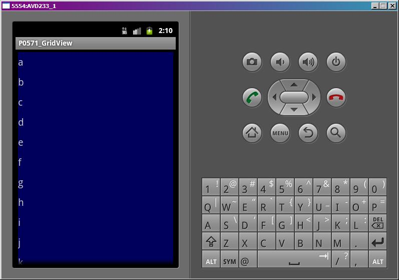
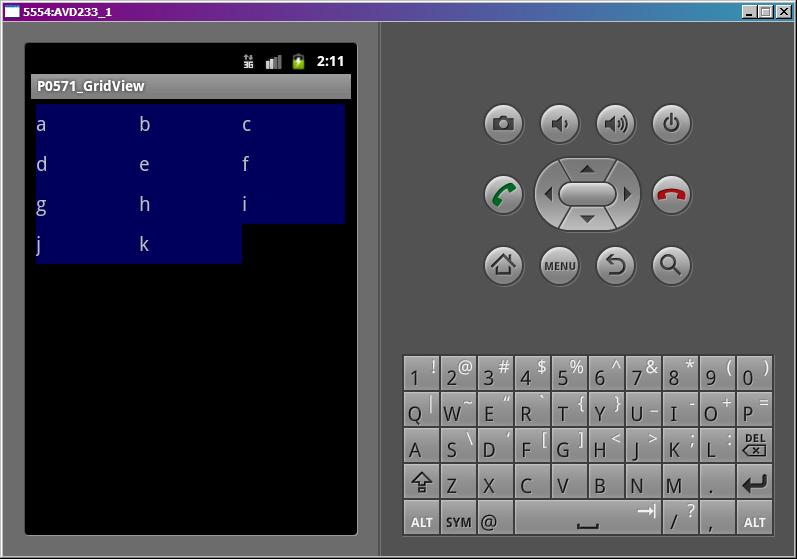
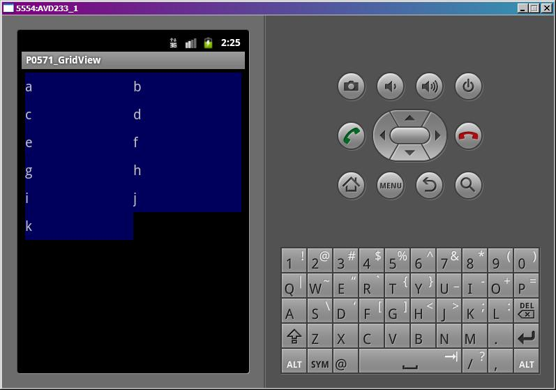
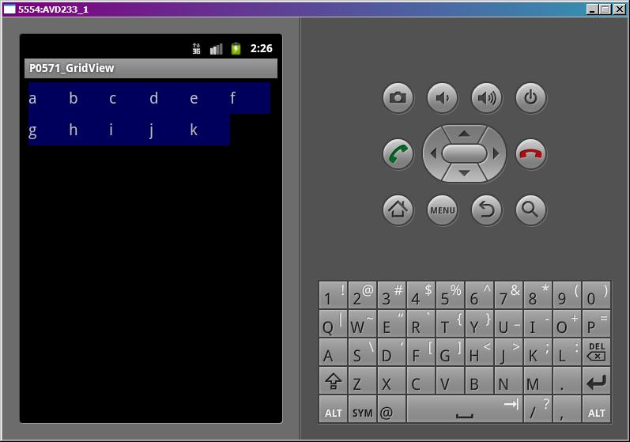
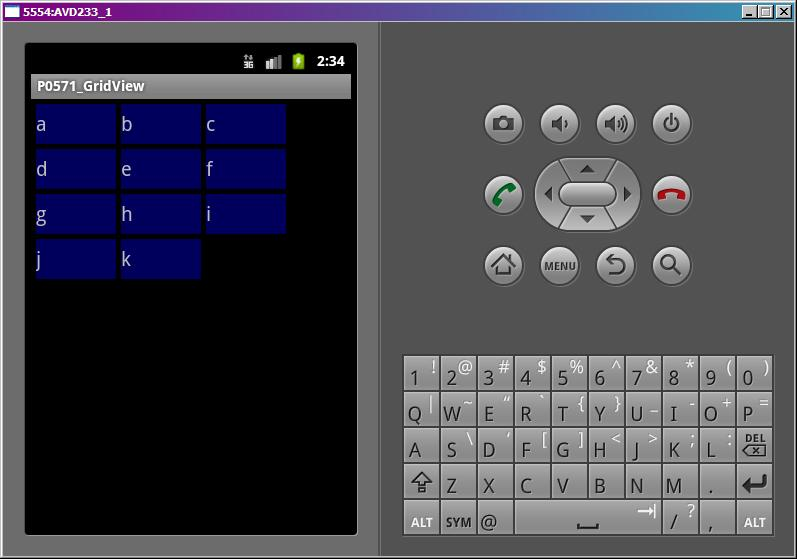
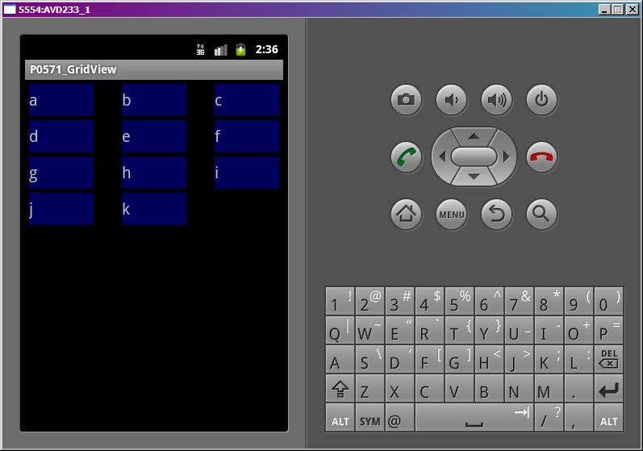
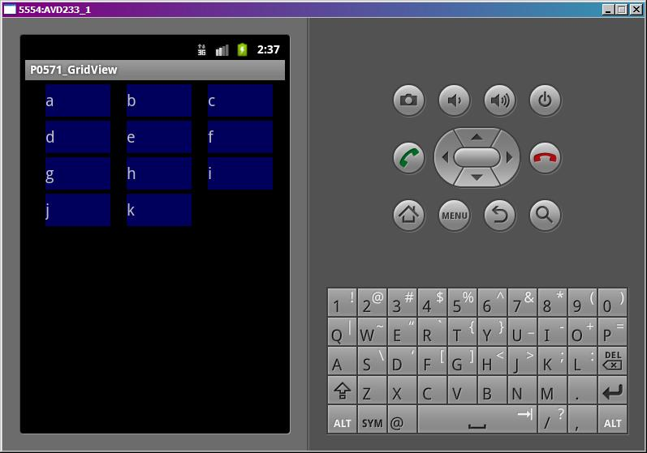

В этом уроке:
- используем GridView
GridView – еще один из компонентов, использующих адаптеры. Он выводит элементы в виде сетки/матрицы/таблицы, нужное подчеркнуть )
Сделаем простой пример. И рассмотрим интересные атрибуты этого компонента.
Создадим проект:
Project name: P0571_GridView
Build Target: Android 4.0
Application name: GridView
Package name: ru.startandroid.develop.p0571gridview
Create Activity: MainActivity
В экран main.xml поместим GridView:
<?xml version="1.0" encoding="utf-8"?>
<LinearLayout
xmlns:android="http://schemas.android.com/apk/res/android"
android:layout_width="match_parent"
android:layout_height="match_parent"
android:orientation="vertical">
<GridView
android:id="@+id/gvMain"
android:layout_width="match_parent"
android:layout_height="wrap_content">
</GridView>
</LinearLayout>Создадим в любой папке res/drawable-* файл rect.xml
<?xml version="1.0" encoding="utf-8"?>
<shape xmlns:android="http://schemas.android.com/apk/res/android" android:shape="rectangle">
<solid android:color="#99000099"></solid>
</shape>Это просто прямоугольник, залитый синим цветом. Я буду использовать его как фон. Я эту тему еще не рассматривал в уроках, тут можно почитать подробнее .
Создадим свой layout для адаптера – item.xml
<?xml version="1.0" encoding="utf-8"?>
<LinearLayout
xmlns:android="http://schemas.android.com/apk/res/android"
android:layout_width="match_parent"
android:layout_height="match_parent"
android:background="@drawable/rect"
android:orientation="vertical">
<TextView
android:id="@+id/tvText"
android:layout_width="wrap_content"
android:layout_height="wrap_content"
android:gravity="center_vertical"
android:minHeight="40dp"
android:textSize="20sp"
android:text="">
</TextView>
</LinearLayout>LinearLayout с фоном drawable/rect, который мы создали ранее. И TextView.
Код MainActivity.java:
package ru.startandroid.develop.p0571gridview;
import android.app.Activity;
import android.os.Bundle;
import android.widget.ArrayAdapter;
import android.widget.GridView;
public class MainActivity extends Activity {
String[] data = {"a", "b", "c", "d", "e", "f", "g", "h", "i", "j", "k"};
GridView gvMain;
ArrayAdapter<String> adapter;
/** Called when the activity is first created. */
@Override
public void onCreate(Bundle savedInstanceState) {
super.onCreate(savedInstanceState);
setContentView(R.layout.main);
adapter = new ArrayAdapter<String>(this, R.layout.item, R.id.tvText, data);
gvMain = (GridView) findViewById(R.id.gvMain);
gvMain.setAdapter(adapter);
adjustGridView();
}
private void adjustGridView() {
}
}Кода немного. Определяем GridView и создаем адаптер. В качестве layout для адаптера используем созданный item.xml, а tvText – это элемент, в который адаптер будет вставлять текст. Метод adjustGridView пока пустой, в нем будем настройки настройки Grid.
Давайте смотреть, какие для GridView есть атрибуты.
numColumns и columnWidth
numColumns – кол-во столбцов в сетке. Если его не задавать, то столбец будет по умолчанию один. Запустим приложение и убедимся.

Давайте поменяем это свойство - укажем, например 3. Сделаем это в пустом пока что методе adjustGridView
private void adjustGridView() {
gvMain.setNumColumns(3);
}Сохраним и запустим.

Все верно, получилось три столбца.
Это свойство также может иметь значение AUTO_FIT. В этом случае проверяется значение поля атрибута columnWidth (ширина столбца).
- если ширина столбца явно указана, то кол-во столбцов рассчитывается исходя из ширины, доступной GridView, и ширины столбцов.
- иначе, кол-во столбцов считается равным 2
Проверим. Укажем кол-во столбцов = AUTO_FIT, а ширину столбцов задавать пока не будем.
private void adjustGridView() {
gvMain.setNumColumns(GridView.AUTO_FIT);
}Запускаем, видим два столбца

Теперь укажем явно ширину столбцов, пусть будет 50.
private void adjustGridView() {
gvMain.setNumColumns(GridView.AUTO_FIT);
gvMain.setColumnWidth(50);
}Теперь кол-во столбцов рассчитывается исходя из их ширины.

Видно, что в экран влезло 6 столбцов. Вы можете поизменять параметр ширины столбцов и убедиться, что их кол-во будет меняться.
horizontalSpacing, verticalSpacing
Это горизонтальный и вертикальный отступы между ячейками. Пусть будет 5.
private void adjustGridView() {
gvMain.setNumColumns(GridView.AUTO_FIT);
gvMain.setColumnWidth(80);
gvMain.setVerticalSpacing(5);
gvMain.setHorizontalSpacing(5);
}Запустим приложение.
Между ячейками появилось расстояние.
stretchMode
Этот параметр определяет, как будет использовано свободное пространство, если оно есть. Используется в случае, когда вы указываете ширину столбца и кол-во ставите в режим AUTO_FIT. Изменим наш метод, добавим туда настройку stretch-параметра.
private void adjustGridView() {
gvMain.setNumColumns(GridView.AUTO_FIT);
gvMain.setColumnWidth(80);
gvMain.setVerticalSpacing(5);
gvMain.setHorizontalSpacing(5);
gvMain.setStretchMode(GridView.NO_STRETCH);
}stretchMode может принимать 4 значения:
NO_STRETCH – свободное пространство не используется

Столбцы выровнены по левому краю. Все свободное пространство справа.
STRETCH_COLUMN_WIDTH – свободное пространство используется столбцами, это режим по умолчанию
Столбцы растянуты по ширине. Она уже может не соответствовать той, что указана в setColumnWidth.
STRETCH_SPACING – свободное пространство равномерно распределяется между столбцами

Ширина столбцов неизменна. Увеличены интервалы между ними.
STRETCH_SPACING_UNIFORM – свободное пространство равномерно распределяется не только между столбцами, но и справа и слева

Ширина столбцов неизменна. Увеличены интервалы между ними и с боков.
Разумеется, все эти параметры можно задавать не только программно, но и через атрибуты в layout-файлах. Вместо ArrayAdapter можно использовать любой другой. Можно прикрутить обработчик setOnItemClickListener и получать позицию или id нажатого элемента. Все как в обычных списках.
Есть также хороший пример по этой теме:
http://developer.android.com/resources/tutorials/views/hello-gridview.html